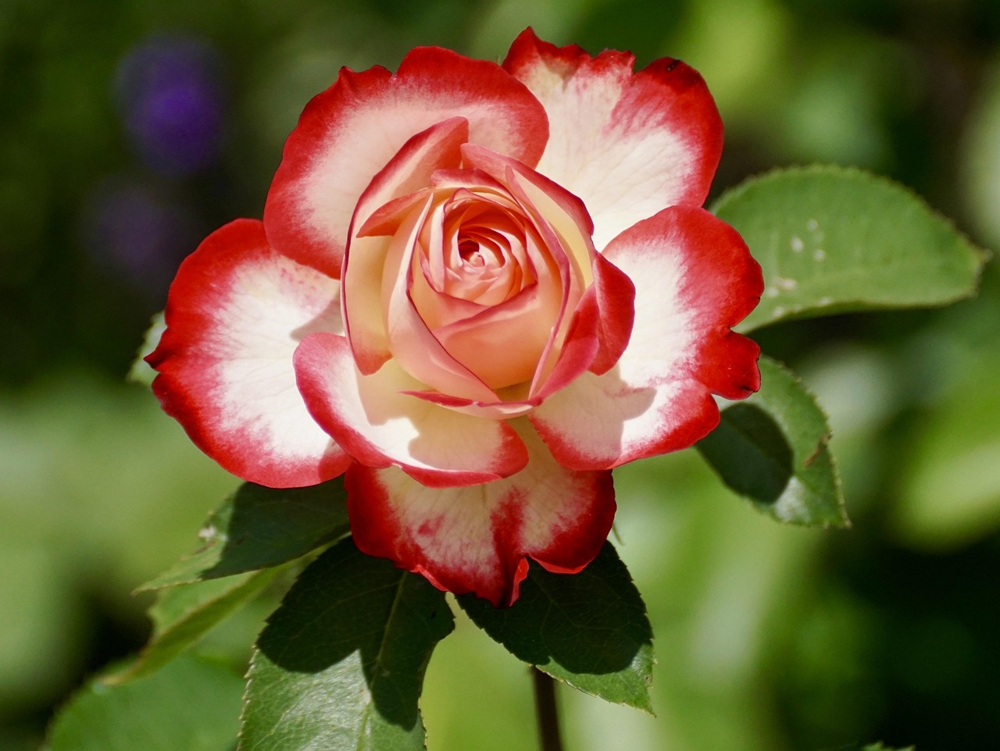

Estação das Flores
🌸 Bem-vindo à Estação das Flores! 🌼
A primavera chegou trazendo cores, perfumes e a delicadeza que só as flores sabem expressar.
Aqui na Floricultura Z/L, cada flor conta uma história, encanta o olhar e perfuma a alma.
Celebre a beleza da nova estação com um presente da natureza!
Venha florir seus dias com a gente. 💐🌿

🌿 Aqui na Floricultura Z/L — Flores com Estilo, Para Todos os Momentos
Somos uma floricultura moderna que vai além dos arranjos tradicionais. Aqui, criatividade e design se
encontram para transformar flores em experiências.
Trabalhamos com buquês autorais, decoração floral para eventos, presentes personalizados e entregas
rápidas com todo o cuidado que cada flor merece.
Nossa missão é conectar pessoas através da beleza, da cor e do frescor das flores — sempre com um toque
contemporâneo e sustentável.